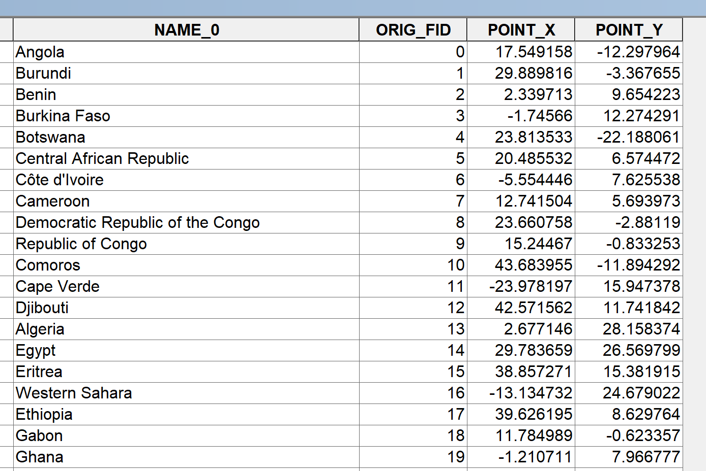

Causal Inference with Spatial Data
(ArcGIS 10 for Economics Research)
Lecture 4
Distance as instruments
Masayuki Kudamatsu
29 August, 2018
Press SPACE to proceed.
To go back to the previous slide, press SHIFT+SPACE.
Today's road map
1. When is distance a valid instrument?
2. Nunn (2008)
3. Distance calculation
- Exercise 1: Replicate instruments in Nunn (2008)
4. Intersect & Surface area calculation
- Exercise 2: Replicate slave trade data in Nunn (2008)
5. List in Python
1. When is distance a valid instrument?
Let's first look at a few examples of distance used as instruments
Oster (2012)
HIV prevalence $\uparrow$ $\Rightarrow$ Risky sexual behaviour $\downarrow$
Instrument: Distance to DR Congo
$\hat{\beta}_{IV} < 0$ while $\hat{\beta}_{OLS} > 0$
Woodruff & Zenteno (2007)
Migration rate to rich country (Mexico $\rightarrow$ USA) $\uparrow$ $\Rightarrow$ Investment in home country $\uparrow$
Instrument: Distance to early 20c railway stations
$\hat{\beta}_{IV} > 0$
Issues on distance as instruments #1
(cf. Gibson & McKenzie 2007, p. 227)
Exclusion restriction
Selection in space
- More affluent can live close to cities, etc.
Distance to other things in the same place
- e.g. Distance to cities: access to markets, schools, clinics...
-
Closer to DR Congo
$\Rightarrow$ Higher mortality due to proximity to conflict? -
Closer to historical railway stations
$\Rightarrow$ More prosperous due to path dependence?
Issues on distance as instruments #2
(cf. Gibson & McKenzie 2007, p. 227)
LATE
Treatment can be induced by other factors than distance
Is LATE of interest? (cf. Imbens 2010)
2. Nunn (2008)
Perhaps the best example of using distance as instruments
Research Question
Did slave trades cause African underdevelopment?
Important?
- Many conjecture slave trades adversely affected Africa's living standards
Original?
- First systematic and convincing evidence of causality
Feasible?
Data
Treatment variable
# of slaves exported from each country: constructed from
(1) # of slaves exported from each port of Africa
(2) Ethnicity of a sample of 100,000+ slaves shipped from Africa
(3) Murdock's (1959) map of ethnic homelands in Africa
We will learn how to allocate (1) across countries
by intersecting (3) with country polygons
Data (cont.)
Instruments
Distance to nearest slave trade centers
- Trans-Atlantic
- Indian Ocean
- Trans-Saharan
- Red Sea
Data (cont.)
Instruments
Distance to nearest slave trade centers
- Trans-Atlantic
- Indian Ocean
- Trans-Saharan
- Red Sea
We will learn how to obtain distance to Trans-Atlantic trade centers
Exclusion restrictions
Selection in space?
- Location of slave trade centers:
- Determined by climate suitability of plantation crops / location of mines (p. 160)
- Not affected by distance to slave export locations in Africa
Distance to other things in the same place?
- Slave markets $\neq$ other economic opportunities
- Reduced-form correlation is absent outside Africa (p. 163)
LATE
Maybe a smaller impact if countries voluntarily engaged in slave trades
But LATE may be of more interest in this context
Empirical specification (2nd stage)
\begin{align*} y_{i} = & \ \alpha + \beta \ln \Big(\frac{exports_i}{area_i}\Big) + \boldsymbol{X}'_{i}\boldsymbol{\gamma} + \varepsilon_{i} \end{align*}
| $y_{i}$ | GDP per capita in country $i$ in 2000 |
| $exports_i$ | # of slaves exported 1400-1900 from country $i$ |
| $area_i$ | Land surface area of country $i$ |
| $\boldsymbol{X}_{i}$ | Controls |
Empirical specification (1st stage)
\begin{align*} \ln \Big(\frac{exports_i}{area_i}\Big) = & \ \ \delta + \boldsymbol{D}'_i\boldsymbol{\Omega} + \boldsymbol{X}'_{i}\boldsymbol{\eta} + \mu_{i} \\ \end{align*}
| $\boldsymbol{D}_i$ | Distance to nearest slave trade centers |
We will learn how to obtain some of controls with ArcGIS
- Distance from equator (i.e. latitude of centroid)
- Longitude of country $i$'s centroid
1st stage results
(Table IV of Nunn 2008)
Weak instruments
F-stat on excluded instruments: very low
$\Rightarrow$ Moreira's (2003) CLR confidence intervals
-
Stata ado:
condivreg - Works only for single endogenous regressor
- For multiple endogenous regressors, use LIML with Bekker's (1994) s.e. correction (cf. Imbens 2007)
2nd stage results
(Table IV of Nunn 2008)
Mechanisms
Ethnic fractionalization
Weaker state
Low interpersonal trust (Nunn & Wantchekon 2011)
Prepare for the rest of this lecture
1. Launch ArcMap 10 (it takes time)
2. Download the zipped dataset for lecture 4
3. Save it to Desktop (C:\\Users\\yourname\\Desktop)
- Don't save in the remote server, which slows down ArcGIS
4. Right-click it and choose 7-Zip > Extract to "Lecture4\"
-
So the directory path will be:
C:\\Users\\yourname\\Desktop\\Lecture4
Prepare for the rest of this lecture (cont.)
5. Right-click the following zipped data and choose 7-Zip > Extract Here
-
10m-coastline.zip(coastlines) -
Murdock_shapefile.zip(ethnic homelands)
Prepare for the rest of this lecture (cont.)
Now in ArcMap's Catalogue Window:
6. Establish connection to data folder
- Right-click Folder Connections
- Select Connect to Folder
- Choose Desktop > Lecture4
7. Prepare the Model Builder
-
Create a Model and Save it as "
exercise1" and "exercise2" insidecode/models.tbx
3. Distance calculation
Depends on input feature types
- Point to point
- Point to polyline
- From polygon
Distance calculation #1
Point to point
1. Obtain geographic coordinates
2. Use the Great Circle Distance formula
\begin{align*} d_{ij} =& \ 111.12 \times \cos^{-1}\big[\sin(La_i)\sin(La_j) \\ & + \cos(La_i)\cos(La_j)\cos(Lo_i-Lo_j)\big] \end{align*}
- $d_{ij}$: distance in km from $i$ to $j$
- Proof: see Wolfram MathWorld
-
Can be implemented by Stata ado
globdist
Globdist
1. In Stata, type: findit globdist, to install
2. Prepare the data so that
- lat / lon: coordinates of each observation
- lat_i / lon_i: coordinates of location $i$
3. Type:
globdist newvar, lat0(lat_i) lon0(lon_i)
-
newvar: distance to location $i$ - use latvar(), lonvar(), to specify coordinate variables if not named lat / lon
Alternative method for small areas
UTM projection (cf. Lec 3) + Pythagorean theorem
- For study area spanning < 6° in longitude
Distance calculation #2
Point to polyline
Examples: distance to roads, railway lines, rivers...
Need the coordinate of nearest point on the polyline
Use ArcGIS's Near tool
- It also calculates the distance to nearest point
Application: Redding & Sturm (2008)
Detour: Redding & Sturm (2008)
West German cities near the border with East Germany:
Population growth $\downarrow$ after 1945
Distance to border: can be obtained by Near tool
Distance calculation #3
From polygon
We have two cases
- From the edge of a polygon
- From the centroid of a polygon
Distance calculation #3.1
From the edge of a polygon
We can just use the Near tool
Distance calculation #3.2
From the centroid of a polygon
More appropriate when mean distance from any point within a polygon matters
To calculate the distance to a point:
- Obtain the coordinate of a polygon centroid by:
-
Stata ado
shp2dta(cf. Lec 2) - Add Geometry Attributes in ArcGIS (cf. Lec 2 Ex 1 Step 3)
- Then use the Great Circle Distance formula
- Stata ado
globdist
Application: Campante & Do (2014)
Detour: Campante & Do (2014)
Population concentration around US state capital city
- Measured by the distance-weighted sum of county population
- Distance: btw capital and county centroids
$\Rightarrow$ US state govt quality $\uparrow$
- Newspaper coverage of state politics $\uparrow$
- Money politics $\downarrow$
- Public good provision $\uparrow$
Distance calculation #3.2 (cont.)
From the centroid of a polygon
To calculate the distance to a polyline/polygon:
- Create centroid point features in ArcGIS
- Feature To Point
- Add XY Coordinates
- Use the Near tool
Application: Nunn (2008)
Exercise #1: Overview
Replicate instruments in Nunn (2008): Distance to Slave trade centers
Exercise #1: Overview (cont.)
We proceed in three steps:
1. Create country centroid point features
- Used as control variables as well
2. Identify closest point on the coast from country centroid
3. Calculate distance to closest slave trade centers
- Trade center coordinates: use online gazetteer (cf. Lecture 1)
Exercise #1: Step 1
Obtain country centroids
Input: Country polygons for Africa
- Created by the lecturer from GADM (cf. Lec 1 Ex 1)
Geo-processing tools:
- Feature To Point
- Add XY Coordinates
Exercise #1: Step 1
Feature To Point
Input Features: ...\Lecture4\input\gadm36_africa.shp
- Country polygons
Output Feature Class: ...\Lecture4\temporary\centroids.shp
Uncheck "Inside"
- How this option works: "[F]ind a location in a relatively wide or open area inside the polygon and to avoid a location being too close to the polygon boundary" (personal correspondence with ESRI)
Exercise #1: Step 1 (cont.)
Now save and run the Model.
Overlay the output over gadm36_africa.shp.
You should see something like this:
Exercise #1: Step 1 (cont.)
Also browse the attritube table.
Notice that Feature To Point doesn't add coordinates to the attribute table of the output.
So...
Exercise #1: Step 1 (cont.)
Add XY Coordinates (Data Management)
Input Features: centroids.shp
- The output from Feature To Point
NOTE: This tool overwrites the input data.
You might wonder if we can use Add Geometry Attribute, but it works only for polygons.
Exercise #1: Step 1 (cont.)
Now save and run the Model.
Browse the attribute table. Now you should see two new fields POINT_X and POINT_Y.
Exercise #1: Step 2
Closest point on the coast
Inputs: Coastline polylines
Geo-processing tool: Near (Analysis)
- Generate Near Table tool does the same job
- But it will drop country names...
What Near tool does
(source: ArcGIS Help on Near)
Exercise #1: Step 2
Near (Analysis)
Input Features: country_centroids.shp (2)
- Output from Add XY Coordinates
Near Features: ...\Lecture4\input\10m_coastline.shp
- Coastline polyline features
Exercise #1: Step 2 (cont.)
Check "Location"
- Otherwise the coordinate of the nearest point on coast won't be attached to attribute table
Method: GEODESIC
- Calculates distance by Great Circle Distance Formula
- If we use data in UTM, choose PLANAR.
NOTE: This tool overwrites the input data.
Exercise #1: Step 2 (cont.)
Now save and run the Model. Browse the attribute table. Now you should see four new fields:
- NEAR_FID: FID of coastline segment
- NEAR_DIST: Distance to coast in meters
- NEAR_X: Longitude of the nearest point on coast
- NEAR_Y: Latitude of the nearest point on coast
Exercise #1: Step3
Distance to slave trade centers
Approach 1: use globdist
- Table to Excel, to export the output from Near tool
-
In Stata, use
globdistto calculate distance between nearest point on the coast (NEAR_X, NEAR_Y) and all slave trade centers. - Pick the shortest distance
Exercise #1: Step3 (cont.)
Distance to slave trade centers
Approach 2: use the Near tool in ArcGIS
- Create slave trade center point features
- Create nearest coast point features (use NEAR_X, NEAR_Y)
- Use Near (near features: slave trade centers)
- Table to Excel
"Model" models for Exercise 1
In the Lecture4\solutions4exercises folder, you can find
models.tbx\exercise1
Extra exercise #1
Centroids outside polygons
Nunn (2008, p. 170): "For five countries where the centroid falls outside the land borders of the country (Gambia, Somalia, Cape Verde, Mauritius, and Seychelles) the point within the country closest to the centroid is used."
This can be done by the Near tool
- Near features: country polygons
- (NEAR_X, NEAR_Y) will be different for those centroids outside polygons
Extra exercise #2
Shortest distance route polylines
To make a map that indicates the shortest distance:
Use the XY To Line tool
- Input Table: the output from Near tool
- Start X Field / Y Field: POINT_X / POINT_Y
- End X Field / Y Field: NEAR_X / NEAR_Y
Model Python Script for Exercise 1
Due to time constraint, we skip Python for Exercise 1
Model Python scripts: see Lecture4/solutions4exercises/exercise1.py
4. Intersect + Surface Area Calculation
Data we want to construct
# of slaves exported from each country in Africa
Input datasets:
- # of slaves shipped from each coastal country
- Each ethnic group's share in the total # of slaves exported from Africa
- Ethnic homeland map (cf. Lecture 1)
Data we want to construct (cont.)
Input data (hypothetical)
Data we want to construct (cont.)
Assign slaves from coast to inland
Data we want to construct (cont.)
Superimpose country boundaries
Surface area of ethnic C: 50% for X / 50% for Y
Data we want to construct (cont.)
Deal with split ethnic homelands
$\Rightarrow$ Assign slaves by surface area (Nunn 2008, fn. 4)
Data we want to construct (cont.)
# of slaves exported by country
Data we want to construct (cont.)
Use ArcGIS to create:
Ethnic homeland by country intersection polygons
Attribute table:
- Country ID
- Ethnic group ID
- Surfare area
Then export to Stata to do the other calculations...
Exercise #2
Surface area of intersection polygons
Input data:
1. Ethnic homeland polygons (borders_tribes.shp)
- Downloaded from Nathan Nunn's website
2. Country polygons (african_countries.shp)
Exercise #2 (cont.)
Geo-processing tools:
1. Intersect (Analysis)
- Match ethnic homelands with countries
2. Project (Data Management)
- Choose coordinate system for surface area calculation
3. Add Geometry Attributes
- Calculate surfare area as a new field of attribute table
Exercise #2: Step 1
Intersect (Analysis)
Input Features (Lecture4/input folder)
borders_tribes.shp
african_countries.shp
- Use shift+click to select more than one file
Output Feature Class: ...\Lecture4\temporary\intersect.shp
Join Attributes: ALL
Output Type: INPUT
Exercise #2: Step 1 (cont.)
Now save and run the Model.
Browse the output.
Browse the attribute table of the output
Intersect vs Spatial Join
If only to know which ethnic group lives in which country
$\Rightarrow$ Spatial Join (with JOIN_ONE_TO_MANY option)
- Output features: target features
To obtain data at the intersection level
$\Rightarrow$ Intersect
- Output features: intersection polygons
Application of Intersect tool:
Detour: Bleakey & Lin (2012)
Intersect fall lines + rivers to identify potential portage sites
Exercise #2 (cont.)
Surface area calculation
Use equal area projections
- Study area: whole Africa
- UTM cannot handle such large area (cf. Lec 3)
Sinusoidal: often used for the entire world or continents
Sinusoidal projection
Assume the Earth is a sphere. Then:
Length of 360° in latitude: same across all longitudes
Length of 360° in longitude:
| at latitude 0° (equator) | $\Rightarrow$ | $2\pi$ x Earth's radius |
| at latitude $\theta$° | $\Rightarrow$ | $2\pi$ x Earth's radius x $\cos(\theta)$ |
$\leftarrow$ Earth cross-section cut through North and South Poles
Sinusoidal projection (cont.)
Projected coordinate $(x',y')$ is given by:
\begin{align*} y' & = M_y * y \\ x' & = M_x * (x - x_0) * \cos(y) \end{align*}
| $M_x, M_y$ | Length of 1 ° in longitude/latitude on equator (in meters) |
| $y$ | Latitude in geographic coordinate (°) |
| $x$ | Longitude in geographic coordinate (°) |
| $x_0$ | Central meridian |
Central meridian: affect how map looks, not surface area calculation
Sinusoidal projection (cont.)
Central meridian & all the parallels: straight lines
Other meridians: sinusoidal curves

Exercise #2: Step 2
Project (Data Management)
Input Dataset or Feature Class: intersect.shp
- Output from Intersect
Output Dataset or Feature Class: ...\temporary\intersect_sinusoidal.shp
Output Coordinate System: Africa_Sinusoidal
- Projected Coordinate System > Continental > Africa
- Notice: central meridian is set at 15°E (middle of Africa)
Exercise #2: Step 3
Add Geometry Attributes
This tool can be used for surface area calculation
Input Features: intersect_sinusoidal.shp
- The output from Project
Geometry Properties: check AREA
Area Unit: SQUARE_KILOMETERS
- If not specified, it'll be square meters
Note: this tool overwrites the input file
Exercise #2: Step 3 (cont.)
Now save and run the Model.
Browse the output and its attribute table.
Is everything as expected?
An alternative to Exercise #2 Steps 2-3
You can directly use Add Geometry Attributes
Input Features: intersect.shp
- The output from Intersect
Geometry Properties: check AREA_GEODESIC
Area Unit: SQUARE_KILOMETERS
Coordinate System: Africa_Sinusoidal
- If unspecified, the area is calculated based on WGS 1984 (i.e. rubbish)
Exercise #2 Step 4
Export Attribute Table
Which geo-processing tool(s) should we use?
Exercise #2 Step 4 (cont.)
Table To Excel
- Input Table: intersect_sinusoidal.shp (3)
-
Output Excel File:
...\output\intersect_sinusoidal.xls
This time we go with Excel only.
- Advantage of Export Feature Attribute to ASCII: choose which fields to keep
- Various country codes to choose from
- Which one works best with your country data is unknown
- Better to drop unnecessary variables in Stata
"Model" model for Exercise 2
Look at "lecture4\solutions4exercises\models.tbx\exercise2"
5. List in Python
Specify multiple input files in Python
Now export a Python script
Look at the command line for Intersect
# Local variables:
borders_tribes_shp = "C:\\Users\\Masayuki Kudamatsu\\Desktop\\Lecture4\\input\\borders_tribes.shp"
african_countries_shp = "C:\\Users\\Masayuki Kudamatsu\\Desktop\\Lecture4\\input\\african_countries.shp"
# Process: Intersect
arcpy.Intersect_analysis("'C:\\Users\\Masayuki Kudamatsu\\Desktop\\Lecture4\\input\\borders_tribes.shp' #;'C:\\Users\\Masayuki Kudamatsu\\Desktop\\Lecture4\\input\\african_countries.shp' #", intersect_shp, "ALL", "", "INPUT")
For geo-processing tools that take multiple inputs, Model Builder fails to use local variables for input file names
We ourselves need to use local variables
Specify multiple input files in Python (cont.)
If you write the script as follows:
data1 = "data1.shp"
data2 = "data2.shp"
input_list = [data1, data2]
arcpy.Intersect_analysis(input_list, intersect_shp, "ALL", "", "INPUT")
$\Rightarrow$ Python recognises 1st argument as
["data1.shp","data2.shp"]
Python 101
Data type
In Python, a variable can take several data types
-
number = 4 -
string = "python" -
list = [4,"python"] -
dictionary = {"number": 4, "string": "python"}(cf. Lec 8)
See TutorialsPoint for more on data type
Python 101 (cont.)
List
list = [4,"python"]
To define a list, use [ ]
Each item is separated by ,
Items can either be numbers or strings
See TutorialsPoint for more on list
When to use Python List for ArcGIS
1. Loop over files (cf. Lec 3)
2. Specify multiple input file names for a geo-processing tool
- Intersect
- Near (for near features)
See ArcGIS Online Help to tell whether list can be used
ArcGIS Online Help for Intersect
ArcGIS Online Help for Near
Exercise #2 (cont.)
Edit the exported Python script
1. Use the template (Lecture4\template4L4.py)
- Try-Except statement (Lec 2 Ex 6)
- String variables for file names (Lec 2 Ex 7)
- Print commands (Lec 2 Ex 8)
2. Replace Intersect's input file names w/ a list
3. Close outputs in ArcMap
4. Run the script
Exercise #2 (cont.)
The Python script relevant for using the Intersect tool should now look like:
# Set the working directory.
arcpy.env.workspace = "C:\\Users\\Masayuki Kudamatsu\\Desktop\\Lecture4" # NEVER USE single backslash (\).
# Local variables:
borders_tribes_shp = "input\\borders_tribes.shp"
african_countries_shp = "input\\african_countries.shp"
intersect_shp = "temporary\\intersect.shp"
# Process: Intersect
inFeatures = [borders_tribes_shp, african_countries_shp]
arcpy.Intersect_analysis(inFeatures, intersect_shp, "ALL", "", "INPUT")
Model Python Script for Lecture 4 Exercise 2
Look at solutions4exercises/exercise2.py
What we've learned on ArcGIS
- Create polygon centroid point features
- Calculate distance to polyline features
- Intersect polygons/polylines
- Calculate surface area of polygons
Do you remember which geo-processing tools you used for each of these tasks?